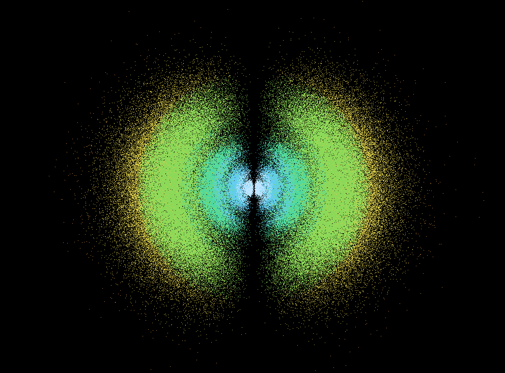

This is my simulation of a hydrogen atom according to the Schrödinger Atomic Model written in C++. In quantum physics, the electron of an atom is not a particle that orbits the nucleus, but rather a wave that exists in a probability cloud around the nucleus. It doesn't have a defined position unless measured, but it has a probability of being found in a certain area around the nucleus. Unless measured, the electron is in a superposition of energy states or orbital states until a measurement forces it to localize or interact.
My simulation uses C++ and OpenGL to create a 3D representation of the probability cloud of an electron around a hydrogen atom. It also uses multithreading for the CPU to calculate each point faster and the GPU is used to render the points in 3D space. It uses the Schrödinger equation which outputs a wave function which can then be used to calculate the probability of finding the electron at a certain position around the nucleus (using spherical coordinates: r for radius and theta and phi its angle relative to the nucleus). The Schrödinger differential equation is solved into two parts for the radial and angular parts of the wave function. The radial part is solved using the Laguerre polynomials and the angular part is solved using the spherical harmonics (with the Legendre polynomials). The denser the cloud is with points, the higher the probability of finding the electron there.
The simulation/equation is time independent and depends on the quantum numbers n, l, and m. The simulation allows the user to change these quantum numbers and see how the probability cloud changes.
The math behind the simulation using the Schrödinger equation is as follows (note that I didn't solve the Schrödinger equation myself but found the solutions online and used the math in my simulation):
The files for this simulation can be found in my github repository in the Simulation folder.